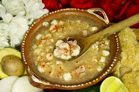
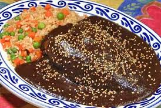
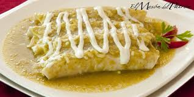

The name of México has several hypotheses that entail the origin, history, and use of the name México, which dates back to 14th century Mesoamerica. The Nahuatl word México means place of the Mexica but the ethnonym Mexicatl itself is of unknown etymology.[1] Scholars have suggested "Hare of the Aloes" or a synonym of the war god Huitzilopochtli as possible roots.[2] An alternate understanding is that the name may come from the word mexixin, a cress that grew in the swamplands of Texcoco Lake. It was an edible grass that the Aztecs or Mexica survived on as they settled where today lies México City.
The beaches are very tourist and famous
cancun , puerto vallarta, acapulco, playa del carmen. .

como and visit.
FOOD
  Mexican foods are recognized in many other parts of the world,Thanks to its delicious seasoning